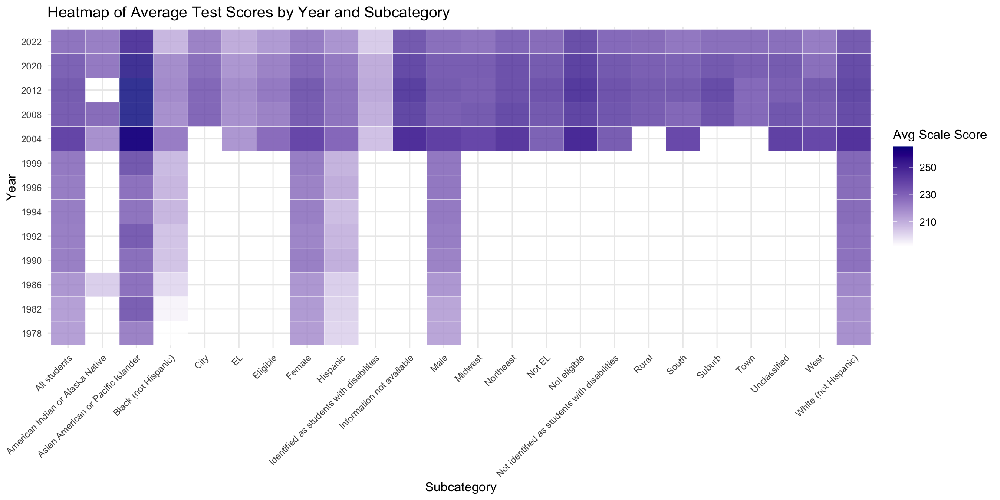

3 Results
The following sections outline trends in standardized test scores of 9-year-old students in US public schools. The sources used to describe or explain these trends in the data can be found at the bottom of the page.
3.1 Mathematics
This graph provides a clear visualization of the trend of Mathematics scores for all students aged 9. It shows a significant improvement in scores from 1980 through the early 2000s, with scores peaking around 2012. Between 2008 and 2012, there is a plateau at the highest score, suggesting a possible threshold where further improvements in score are difficult to achieve.
The drop in scores after 2012 raises questions about possible changes in factors such as resource allocation, changing education policies, or broader socioeconomic issues. The sharp drop between 2020 and 2022 is most likely related to the COVID-19 pandemic, which disrupted education globally and may have disproportionately impacted students. This two year period decline is consistent across all categories, emphasizing the disruption it caused to students’ learning.
Another possible influence to the score decline in recent years is policy;the introduction of Common Core standards starting in 2010, which reformed math and English curricula nationwide, may have influenced the trends observed. These curriculum changes could have contributed to the shifts in performance during the period. Studies have shown that the change in standards had no positive impact on student achievement and may have potentially worsened student understanding.
Adding racial subcategories into the graph gives us insight on some of the racial disparities in the educational system. Though the gap has narrowed, there is a consistent difference in test scores between White, Hispanic, and Black students. While gaps in reading test scores are experiencing reductions, mathematics has proven more resistant to change. This may be due to the subject specific challenges which might need more attention.

The heat map clearly visualizes differences between all subcategories where data is available, with missing data represented as blank spaces. Warmer colors (red) highlight higher average scores, while cooler colors (blue) indicate lower scores. Some key observations include:
‘Asian American or Pacific Islander’ students consistently outperform other students, which might suggest better academic outcomes for this group. - Groups like “Black (not Hispanic)” and “Hispanic” appear to perform relatively lower, reflecting potential disparities. These differences in performance become less apparent in more recent years.
Students identified as having disabilities or those eligible for the National School Lunch Program show consistently lower scores, emphasizing the need for targeted support for these groups. Students eligible for School Lunches are part of lower income households, showing the educational setback that comes with lower socioeconomic status.
This graph also highlights the availability of data throughout time. Certain demographics which were not prioritized in earlier years are missing data entirely. For instance, data for students with disabilities only begins in 2004, reflecting historical limitations in prioritizing certain demographics, or even identifying them alltogether. Missing data can also be attributed to the lack of data collection tools. The evolution of technology and centralized systems has significantly improved the ability to collect and share data across states, enabling a more detailed analysis today.
To further explore the impact of the pandemic, we examine the shift from 2020 to 2022 in test scores. Across all categories, there is a drop in test scores and this graph visualizes the value of this shift. There was a decline in test scores across all subcategories. Some were affected more than others, with Black, Hispanic, Disabled and Suburb categories being the most affected.
The sharper decline in scores after 2020 across these groups shows how the disruptions caused by the pandemic likely hightened preexisting inequities. These students may have been affected disproportionately due to less access to resources for remote learning and lack of support systems.
3.2 Reading
A basic line graph of reading scores for all students over the full time period 1971-2022 will provide us with a high level overview to begin our analysis. We can observe that reading scores generally have gradually increased over this period. Starting in 1971, the average reading scores across all students was 208, and has since climbed to 221 in 2012. This trend in increasing scores has two noticeable exceptions: a 3 point decrease in scores in 1990 from the previous testing year and a 6 point decrease in scores between 2012 and 2022, given scores collected in 2012, 2020, and 2022. Because we are interested in recent education trends and particularly the impact of COVID-19 from 2020 onwards in the quality of US education, we will focus our project in better exploring the decreasing trend of scores in the latter period. We also note that it is possible, given this data, that students’ reading scores have actually be dropping since 2012, and one explanation of this may be the heavily criticized introduction of the common core in 2010 and its long terms impacts; however, without data from 2016 to confirm this, we cannot make further conclusions on this intuition. This graph does, however, gives us evidence to believe that COVID-19 did indeed impact literacy skills among students, so we will continue our analysis under this assumption. Given that we have data on scores not just for all students but across various racial, geographic, and socioeconomic demographics, we can use this observation as a jumping off point for understanding which groups of students across the country have been most impacted in their developing of key critical reading comprehension skills because of unique barriers they faced as a result of the COVID-19 pandemic.
Here we can develop a more thorough understanding of the distribution of reading scores across all demographics recorded by the data source, the National Assessment of Educational Progress. This heatmap breaks down scores for each demographic over the full time period. From this we can make a number of observations: reading scores vary significantly across the different variables, though the overall trend of scores increasing from 1971 to 2012 remains consistent across the majority of them. This observation is constrained by the fact that many variables are only recorded from 2004 onwards, and we will have to limit the scope of the rest of our analysis.
A few trends are immediately noticeable: throughout the years, students who are classified as “English learners” have higher average scores than students are not classified as English learners. As US schools teach reading and writing in English, we can understand why students for whom English is not their first language would struggle more in this subject, and how online learning would only put them at a greater disadvantage of catching up to their peers. In a similar vein, students who are not eligible for the National School Lunch program based on their family’s economic status have higher average scores than students who are eligible for the program. These students may face additional barriers that negatively affect their education: they may be facing food and/or housing insecurity, lack of internet connectivity, or difficultly accessing educational resources, among others; all these barriers would have been heightened by the pandemic. Students in the northwest region of the country also tend to score higher than the rest of the country, and were 5 point higher in 2022 than all other regions. Additionally, there are significant gaps in average reading scores by race from 1980 onwards, which again may be due to institutional barriers faced by certain groups, and again these institutional disadvantages may have been heightened in the wake of the pandemic.
Thus, we have now identified groups of students that have historically faced barriers to a successful education and appear most at risk of falling behind in critical reading and comprehension skills. We can now examine which groups were actually most disadvantaged by the shift away from traditional education methods in the last few years.
We can clearly see that the overall trend in reading scores decreasing from 2020 to 2022 are reflected across almost all demographics. With the exception of American Indian or Alaska Native students, all groups of students suffered a decrease in reading scores from 2022 to 2022. A careful examination of the grouped bar chart shows that some groups’ scores lowered more significantly than others: students living in towns and suburbs scored more than 5 points lower in 2022, for example, while students living in cities had no change in average scores. Now that we have confirmed that the shift in learning modalities from 2020-2022 impacted students virtually across the board, we can do further analysis to more closely examine where scores were most impacted.
Here we can observe the distribution of score changes between 2020 and 2022. As we observed before, the only demographic of students whose scores improved in this period of time were American Indian or Alaska Native students. Nearly all other demographics of students exhibited a significant decrease in reading scores. We can better understand why these students fared worse during the COVID-19 pandemic by considering the consequences of the pandemic itself.
One area where the divide in students is clear from this graph is students eligible for the National School Lunch Program vs students not eligible for it based on their family’s economic situation. We have already observed that students eligible for this program have done worse historically in developing critical reading skills, which can be a result of numerous barriers that low income students may face: housing and food insecurity, high dropout rates in families, and lack of resources, among others. In the wake of the pandemic, each of these factors would have worsened with quarantining, and further made worse by the shift to online learning, which requires technology and access to internet that low income students may simply not be able to afford. This would explain why these students exhibited a drop in average scores more than twice as much as the drop in scores of their peers who are not part of the National Lunch program, and puts them at a greater disadvantage to continue a successful education beyond early learning.
Another area of significant divide is across students in different area types: cities, towns, suburbs, and rural areas. Students in towns and suburban areas experienced the most significant drop in reading scores, while students living in cities exhibited no difference at all. A number of pandemic-related factors may help explain this shift: quarantine, for one, may have left students in more isolated areas less motivated with the absence of social interaction that is fundamental especially to a younger person’s development and mental health. More isolated areas may also lack broadband access, which creates challenges during online learning with student participation and engagement. It is important to note that there could vary likely be multicollinearly between these various variables: rural areas also tend to be less wealth areas, for example, while cities may have a mix of low income and high income students, balancing out the negative impacts of the pandemic in those areas. The observation that students living in towns had the most significant drop in reading scores across all variables is certainly an interesting one, and may require further understanding of how the data source defines “towns” and whether there is significant correlation between this variable and others.
Change in scores across race are also interesting. We observe that Black and Hispanic students did slightly worse than their white peers, though there were significant drops in scores across all these groups. Asian American and Pacific Islander students, on the other hand, experienced a very mild drop in scores. This pairs with the insights from the heatmap of which racial groups have historically had lower reading scores. Understanding these observations requires understanding a comprehensive understanding of the history of race and racial structuring in the United States, continuing institutions that disadvantage students of color, and shifting patterns of immigration from the 20th century onwards.
We use this final visualization of our reading analysis as a metric to ensure our previous analysis is correct in assuming that lower reading scores in the last few years is at least in part due to the COVID-19 pandemic. This graph displays long term trends in reading scores, first showing the change in scores from 2004 to 2012 ih the purple bar and then the change from 2012 to 2022 in the blue bar. We observe that almost every variable, again with the exception of American Indian/Alaska Native students, demonstrated increasing scores in reading from 2004 to 2012 and then a decrease fom 2012 to 2022. In many cases, the magnitude of this decrease was as great as the progress these groups of students had made in the previous 10 year period. This confirms that the drop in scores from 2020 to 2022 is not a continuation of a long term trend for some of these groups but a recent development. We have detailed one prominent explanation for this decrease, namely the COVID-19 pandemic. There are a number of other reasons which may have contributed to this decrease: the introduction of common core, as mentioned earlier, for one, or the introduction of online tools that students increasingly rely on such as autocorrect and grammar checkers that may inadvertently inhibit students’ development of these skills. Nonetheless, we now have a more thorough understanding of where the gap in education in terms of key critical reading and comprehension skills is most apparent today.
3.3 Sources
Harvard - Covid-19 Impact on Rural Schools
Learning Loss and Academic Recovery Show Growing Inequality
The Socioeconomic Achievement Gap in US Public Schools